흔들리는 강남 집값. 내년까지 세금 데드라인 매물 폭탄 나온다 (분전 아카데미 김건우 대표)
▶ 원본 영상 보기한눈에 보기
- 올해 서울은 상승장이지만 성북·서대문 등 덜 비싼 곳이 많이 오르고 강남·서초는 하락했다. 출연자 김건우 대표는 대출 규제가 상급지 진입을 막아 수요가 단계적으로 아래 지역으로 내려온 풍선 효과로 본다.
- 고가 주택 조정은 이미 시작됐고 대출 규제, 세법 개정 예고, 주식 폭락, 반포 청약 대기 자금이 겹친 결과다. 내년은 보합이면 선방이라는 전망이다.
- 세법 개정안의 데드라인이 2027년에 몰려 있어 다주택자·상생임대인·임대사업자 매물이 내년에 쏟아질 수 있다. 특히 임대사업자 물량(서울 약 2만5천 세대)은 공시가 6억 이하 등록분이라 비강남 중저가 지역에 영향을 준다.
- 상급지와 하위 지역의 누적 상승률 갭이 이미 거의 메워져, 이번에는 위가 떨어지면 아래도 눌릴 수 있다고 본다. 다만 매물 숫자만으로 가격을 판단하면 안 되고 매물의 성격을 봐야 한다.
- 임대 물량이 매매로 넘어가면 전월세 공급이 줄어 매매가는 내리고 주거비는 오르는 시장이 될 수 있다. 2029년쯤 매물이 바닥나면 눌렸던 가격이 터질 수 있다는 시나리오도 제시한다.
이런 분께 도움이 됩니다
- 서울·수도권 매수 시점을 고민하는 무주택자나 갈아타기 대기자.
- 2027년까지 처분 여부를 결정해야 하는 다주택자·상생임대인·등록임대사업자.
- 매물 증가 뉴스를 어떻게 읽어야 하는지 기준이 필요한 분.
핵심 내용
결론: 고가 주택 조정은 시작됐고 내년은 약한 시장
- 양도세 중과 유예 종료(5월 9일) 뒤 고가 주택이 반등했지만, 세법 개정안 발표 이후 꺾여 지금은 지표와 실거래가 모두 하락 중이다. (12:04)
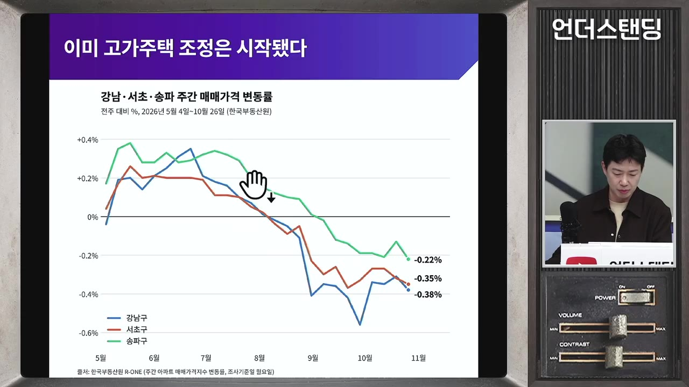
- 2027년 말까지 팔아야 세금 면제를 받는 규제가 많아 내년에도 보합이면 선방이고, 일시 반등이 있어도 조정이 더 올 가능성이 있다고 본다. (37:26)
- 15억~25억 구간(마포·성동급)도 좋게 보지 않으며, 노원·도봉 같은 저가 지역도 거래가 줄고 매물이 쌓이기 시작했다.
- 2022년 하락장과의 차이는 두 가지다. 당시는 호가를 내려도 안 팔렸지만 지금은 내린 호가에는 사는 수요가 있고, 당시는 금리가 전세가를 무너뜨려 역전세와 반대매매가 났지만 지금은 전월세가 강하다. (15:09)
- 2022년 서울 전체 월 거래 600~700건 수준. 지금은 강남 3구만 해도 주 150건 정도가 토지거래허가 신청으로 잡힌다.
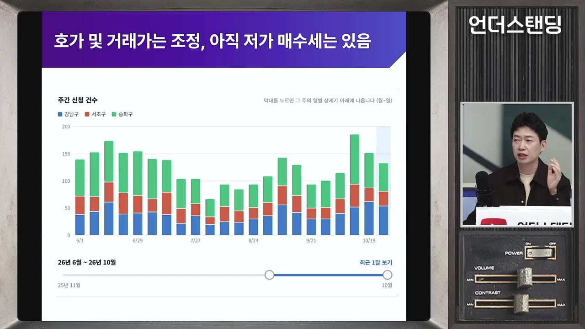
- 실거래 신고는 허가 3~4주 + 신고 2~3주가 늦어 옛 데이터만 보인다. 출연자는 각 구 민원게시판의 토지거래허가 신청 수를 AI로 집계하는 대시보드를 만들어 본다고 했다.
💡 거래는 되지만 매물이 쌓이는 속도가 더 빨라, 조정은 아직 끝나지 않았다.
올해 상승장은 '풍선 효과'로 아래로 내려왔다
- 올해 상승률 상위 5개 구는 성북·서대문·강서·동대문·구로이고, 강남(마이너스)·서초(곧 마이너스)·용산·송파(4%)가 꼴찌다. 2006년 버블세븐 이후 2007년에 노원·도봉이 따라 오른 장과 비슷하다고 본다. (3:33)
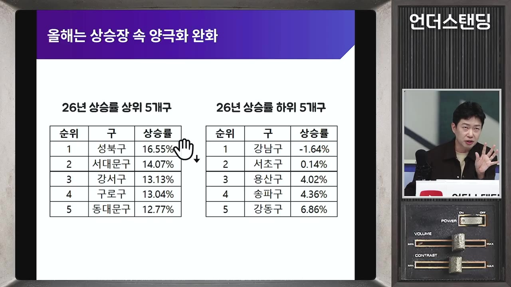
- 강남을 사려는 사람과 성북을 사려는 사람은 다른데 왜 연결되느냐는 질문에, 출연자는 대출 규제가 계단식으로 수요를 밀어내렸다고 답한다. (7:52)
🔁 대출 규제가 만든 계단식 상승 이동
- 똘똘한 한 채 2년
- 6억 대출 규제
- 2·4·6억 규제
- 외곽·경기로 확산
- 1똘똘한 한 채 2년
2023년 반등 이후 규제가 고르게 풀리자 최대한 비싼 곳으로 가는 흐름이 2년 지속, 가격 격차가 크게 벌어짐
- 26억 대출 규제
2025년 6월 대출 한도 6억. 강남은 못 가니 마포·성동·광진이 오름 (7:52)
- 32·4·6억 규제
2025년 10월 15일 25억 이상 2억, 15억 이상 4억으로 강화. 마포·성동도 못 사게 됨
- 4외곽·경기로 확산
올해 3~4월 이후 성북·노원·도봉이 급등, 지금은 부천까지 내려감
- 경기도는 광명·수지 등 주요 지역이 서울 고가 주택과 갭을 메웠지만, 경기 안에서는 다시 양극화가 났다. 반도체 호재로 기대를 모은 하이닉스의 이천과 삼성의 평택이 상승률 꼴찌라는 점이 특이하다.
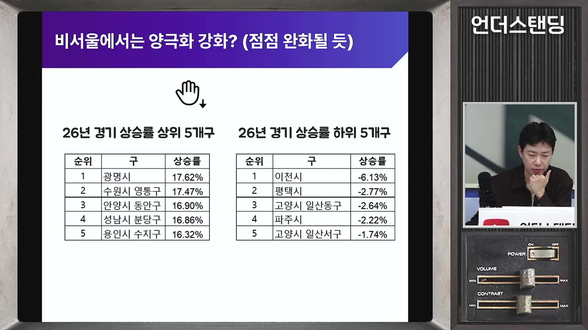
- 출연자의 해석: 성과급을 받은 직원들이 이천·평택 집을 팔고 분당·수지 등 더 좋은 곳으로 이동하고 있다. 통계로 확인된 것은 아니다.
- 지방도 대구 범어 신축이 20억을 가는 등 핵심지 신축은 오르고 구축은 부진해 양극화가 발생했다. 인천도 최근 조금씩 오른다.
고가 주택이 떨어지는 이유 여섯 가지
- 대출 규제가 가장 크다. "고가 주택은 현금 부자가 사니 계속 오른다"는 가정은 틀렸고, 고가 주택도 대출이 필요했다. 규제 효과는 누적되며 작년 10월 이후 연초까지는 올라 출연자가 욕을 먹었다고 했다. (22:30)
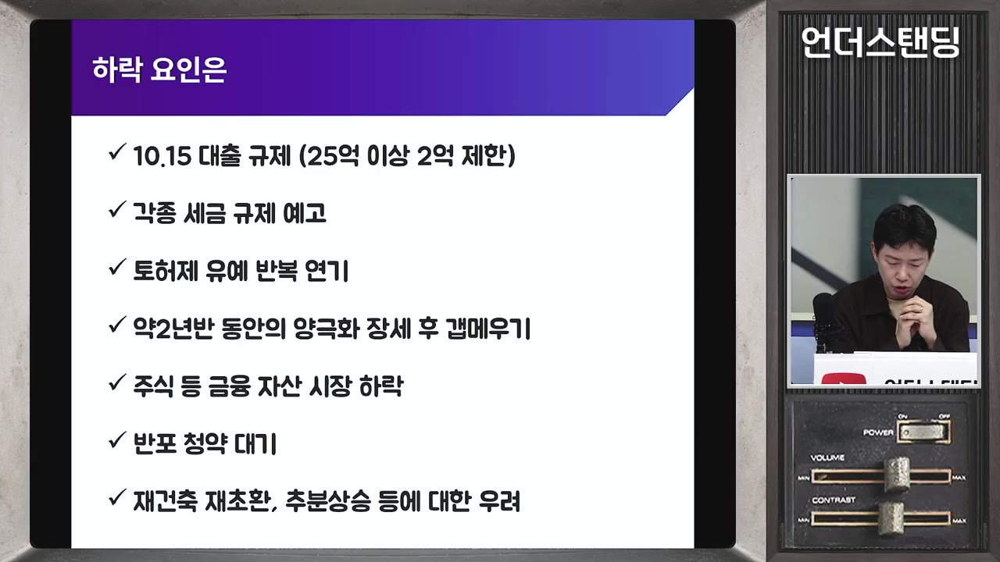
- 세금 규제 예고. 다주택 양도세 중과를 번복(20·30% 중과 대신 5%)하면서까지 촘촘히 때렸다. 아직 국회 통과 전이다.
- 토지거래허가제 입주 유예. 전세 낀 매물의 입주 의무를 2027년 말까지 유예했는데, 세 낀 매물은 입주 가능 매물보다 싸고 매수자는 2026년 4~5월 이전부터 무주택이었던 사람만 가능해 매수자 풀이 좁다. 그래서 가격을 더 끌어내린다. (24:29)
- 출연자는 토허제 자체가 싼 세 낀 매물을 없애 집값 안정에 역효과를 줄 수 있다고 본다.
- 양극화 갭이 다 메워져 밑에서 올라오는 추격 매수가 꺾였다(다음 절).
- 주식 폭락. 30억 이상 주택 매입 자금 중 주식·채권 매각 대금 비중이 20% 전후, 15억~35억은 10% 전후다. 대출이 안 되니 주식을 팔아 사던 수요가 막혔고, 압구정 계약금 8억을 날렸다는 식의 잔금 미납 사례도 건너 들었다고 한다. (26:25)
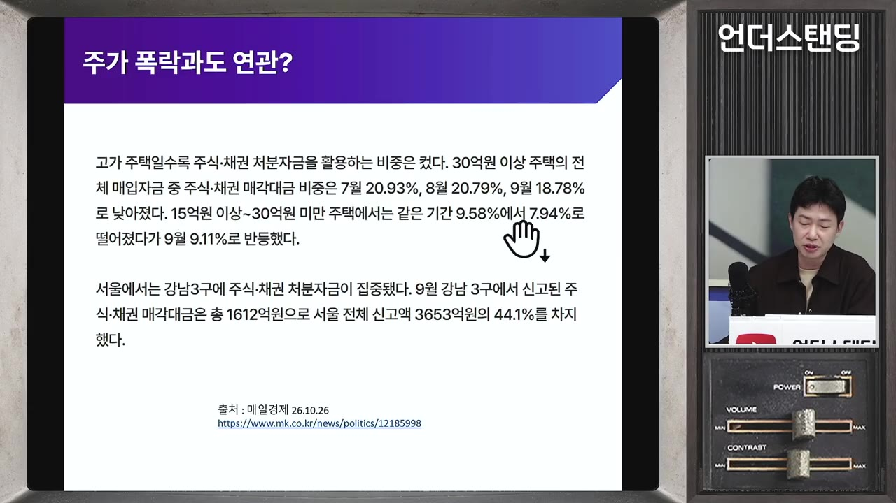
- 재건축 급락. 재건축초과이익환수제 부과 금액 불확실, 추가 분담금 상승, 장기보유특별공제 축소(오래 보유한 사람에게 세금을 더 매김)로 오래된 재건축 급매가 쌓인다.
반포 청약 대기 자금이 매수를 멈추게 한다
- 11~12월 분양 예정인 반포 '반디클'(반포 DH 클래스로 이름 변경, 자막상 명칭 불분명)은 분양가 30억~35억에 가치가 60억 이상으로 예상돼 차익 30억 로또로 불린다. 일반 분양 약 1,800세대, 그중 특별공급 800세대 이상이다. (27:31)
- 입주 때 대출이 2억뿐이어서 현금 25억~30억을 쥔 무주택자가 주 대상이다. 1주택자도 청약은 가능하지만 가능성은 매우 낮다.
- 직전 단지 반포 트리니원도 현금 30억이 필요했는데 약 6만 명이 청약했다. 1만 명만 진성이라 해도 30조 원의 대기 자금이다.
- 경쟁률 30:1이면 기대값이 1억이라 현금 보유자는 무조건 넣어 본다. 부모가 증여 대신 법정 금리(4%대)로 빌려주는 방식도 쓴다.
- 이 대기자들은 공고 전인 지금 집을 사지 않는다. 떨어지면 미련 없이 매수하겠다는 사람이 많아, 탈락자가 어디로 가느냐가 단기 시장의 중요한 변수다. (31:20)
- 과거 방배·잠실의 10억~15억 로또 탈락자는 "시장이 오르니 지금이라도 사자"며 유입됐다. 이번에는 시장이 내리는 중이라 전세로 돌아볼 수도 있다.
💡 심리는 죽은 게 아니라 숨어 있다. 사고 싶지만 못 사게 막혀 있을 뿐이다.
매물 숫자만 보고 가격 방향을 읽으면 틀린다
- 아실 데이터로 보면 여름 이후 서울 전역(강남·마포·성북 모두) 매물이 급증했다. 다주택자뿐 아니라 세금 부담을 예상한 1주택자, 고가 주택 보유자가 불안해 미리 던지면서 "매물이 매물을 부르는" 상황이다. (17:51)
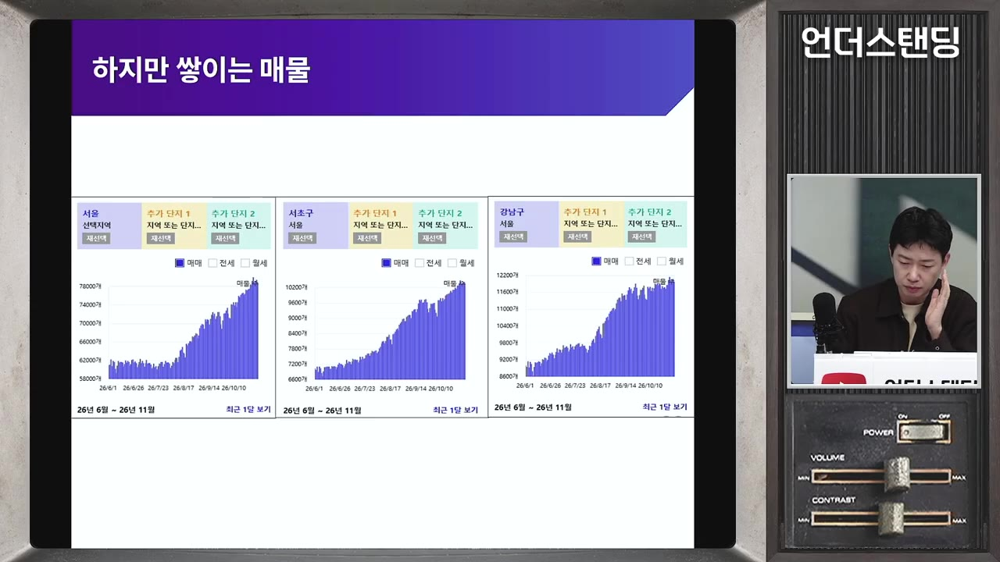
- 길게 보면 매물은 원래 변동이 크고, 양도세 중과 유예 때 소진된 뒤 평상시 수준으로 돌아오는 측면도 있다. 다만 지금은 많은 편이다.
- 성북구는 오르면서 매물이 쌓이는데, 매물이 쌓이면서 가격이 오르는 경우는 흔하다. 반대로 2022년 하반기 폭락장에서는 매물이 줄었다. 그 가격에 못 팔겠다며 거두고 꼭 팔아야 하는 사람만 남았기 때문이다. (20:35)
- 따라서 매물량은 여러 참고 지표 중 하나이며, 그 매물 중 진짜 빨리 팔아야 하는 비중이 얼마인지 성격을 함께 봐야 한다. 매물이 쌓이니 떨어진다고 주장하던 사람들은 과거에 틀렸다.
이번에는 위가 떨어지면 아래도 눌린다
- 2025년 10월 대출 규제 때 출연자가 풍선 효과(갭 메우기)를 주장한 근거는 격차가 너무 벌어진 상태였다는 점이다. 강남보다 마포가 너무 싸다는 생각이 있을 때 강남을 못 사게 하면 마포로 따라붙는다. (41:18)
- 2023년을 0으로 둔 누적 상승률 갭 그래프는 2025년 10월 15일이 양극화 정점이고, 한두 달 버티다 급격히 내려와 지금 거의 다 붙었다. 수지는 더 좁혀졌다. (42:04)
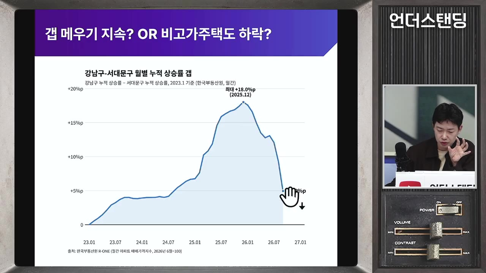
- 붙어 있는 상태에서 위가 내려오면 아래도 함께 내려온다. 밑으로 갈수록 하락 폭은 작아지지만 영향을 안 받기는 어렵다.
- 진행자 이프로의 반론: 세금 부담으로 강남을 떠나는 사람은 대체재인 아래 가격대를 사므로 세컨티어가 약진할 수 있다. 출연자는 가정이 틀릴 수 있음을 인정하되, 이것은 첫 조건이고 세금 때문에 아래가 눌릴 이유가 따로 있다고 답한다.
2027년에 몰린 세금 데드라인
- 핵심 정책 대부분이 2027년을 기한으로 하며 일부(장기보유특별공제 한도)는 2028년까지다. 2028년 총선 전 성과를 노린 것 아니냐는 의심이 나올 정도다. (44:26)
- 분석 전제는 정부안이 그대로 통과된다는 것이다. 민주당이 수정하려는 움직임이 있고 국회 연구원 보고서도 임대사업자 문제를 지적했지만, 정치적으로 크게 완화되지는 않을 것으로 본다. (53:38)
| 정책 | 내용(영상 설명) | 영향 지역 |
|---|---|---|
| 보유세(종부세) 강화 | 고가 주택을 누르는 축. 세부담 상한 150%라 1~2년은 버티지만 해마다 커져 2028년까지 많이 판다 | 고가 |
| 장기보유특별공제 축소 | 출연자가 가장 세다고 보는 규제. 비거주 공제가 2029년부터 0%, 한도(10억→20억 수준, 자막상 불분명)는 2028년까지 유지 | 12억 초과 주택 |
| 다주택 양도세 중과 | 유예 뒤 번복해 5% 수준으로 약화. 세법이 세게 나와 5월에 안 판 사람이 다시 팔 수 있음 | 전 가격대 |
| 상생임대 비과세 | 임대료 5% 이내 인상 시 거주 요건 면제. 임대 기간 만료 후 1년 내 팔아야 비과세. 이미 만료된 사람은 2027년까지 전부 매도 | 전 가격대 |
| 등록임대사업자 중과 면제 | 원래 영구 면제였던 것을 말소 후 1년 내 매도로 일몰 | 중저가(아래 설명) |
| 토허제 입주 유예 | 세 낀 매물 입주 의무 2027년 말까지 유예 | 규제 지역 |
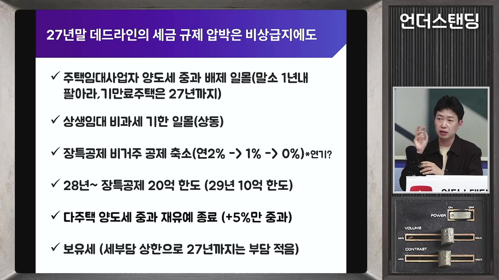
임대사업자 물량은 비강남 중저가에 떨어진다
- 등록 당시 공시가 6억 이하만 혜택이 있어 강남·서초에는 거의 없고(13~14평 초소형만) 국민평형은 해당되지 않는다. 노원 등 갭이 작아 전세 끼고 사서 등록한 서울 중저가 주택이 많다. (50:13)
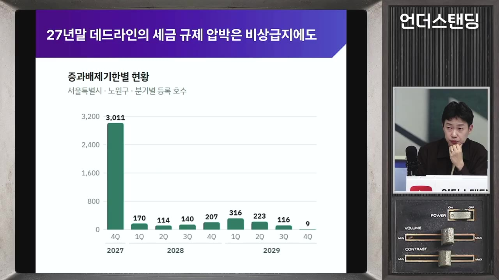
- 출연자 추산: 서울 약 25,000세대, 경기 약 2만 세대. 2025년 이후 만료분을 포함했고 이미 판 사람과 2023~24년 만료 미매도분이 있어 실제는 더 많거나 적을 수 있다. 단지 하나에 100세대씩인 곳도 많다.
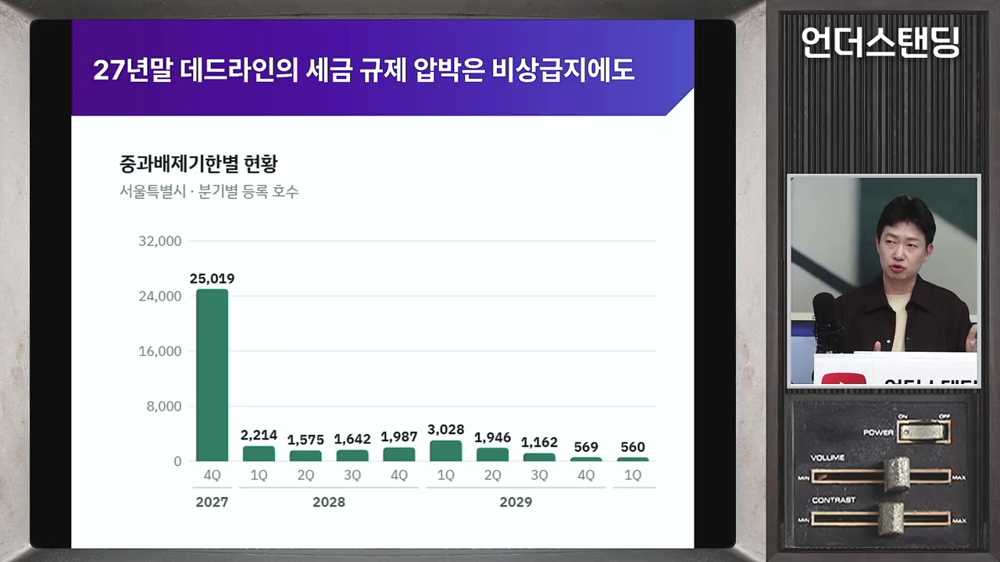
- 2018년 문재인 정부 장려 때 등록한 물량이라 차익이 크고, 중과를 맞으면 안 되니 2027년까지 일반 과세로 팔아야 한다.
- 거주 주택 1채 + 임대 1채인 사람은 거주 주택을 먼저 팔면 중과를 피할 수 있지만 쉽지 않다.
- 그래도 강남 고가 주택의 하방 압력이 더 강한 이유는, 매물이 쏟아질 때 받아줄 여력이 대출 규제로 없기 때문이다. 동탄처럼 사내대출이 있는 곳은 받아줄 힘이 있다. (56:24)
- 이프로의 반론: 강남 매물은 싸지면 모두 사고 싶어하지만, 6억 이하였던 외곽 임대 물량은 더 필사적으로 나오고 사줄 사람도 적어 외곽이 더 떨어질 수 있다. 출연자는 케이스 바이 케이스라고 답했다.
- 토허구역에서는 세입자가 있으면 팔 수 없고, 팔아야 전세금을 내줄 수 있어 2027년 만기 뒤 비워 놓아야 하는 모순이 생긴다. 이프로는 "여기로 와 하고 모아놓고 때리는" 소급 정책이라고 비판했다.
💡 전국 다주택자에게 임대사업을 권한 뒤 그 매물을 2027년에 다 내놓으라는 구조다.
규제를 안 받는 곳과 반도체 벨트
- 인천, 경기 외곽, 지방 비규제 지역은 양도세 중과 대상이 아니고 장특공제 축소도 12억 초과만 해당돼 이번 세법의 영향이 없다. 온기가 퍼지는 중이라 다른 흐름을 보일 수 있고, 이명박 정부 때 서울 고가가 내려올 때 지방이 치고 올라온 전례가 있다. (58:42)
- 세종은 전월세 수요가 올라올 수 있다. 다만 어디가 오른다고 찍어줄 수는 없다고 했다.
- 최근 상승폭이 커 규제 지역 후보가 될 수 있는 경기 중간 이상 지역은 위험하다.
- 동탄·영통·수지 등 삼성·하이닉스 셔틀 출퇴근권은 거래가 줄지 않고 서울보다 낫다. 성과급 기대와 삼성전자 사내대출(성과급보다 먼저 나옴)이 거래와 시세를 올린다. (39:36)
- 그러나 돈을 조금 더 주면 올림픽파크포레온·헬리오시티를 살 수 있어, 서울 윗급이 내려오면 계속 오르기는 쉽지 않다고 본다.
매매가는 내리고 주거비는 오르는 시장
- 고금리 속에서도 전월세가 급등 중이다. 금리와 전세가 반드시 역의 관계라는 통설이 틀렸다. 집값이 많이 오른 지역에서 전세도 15% 수준으로 올랐고, 미아 쪽 신축이 전세 11억을 부른다. (1:04:06)
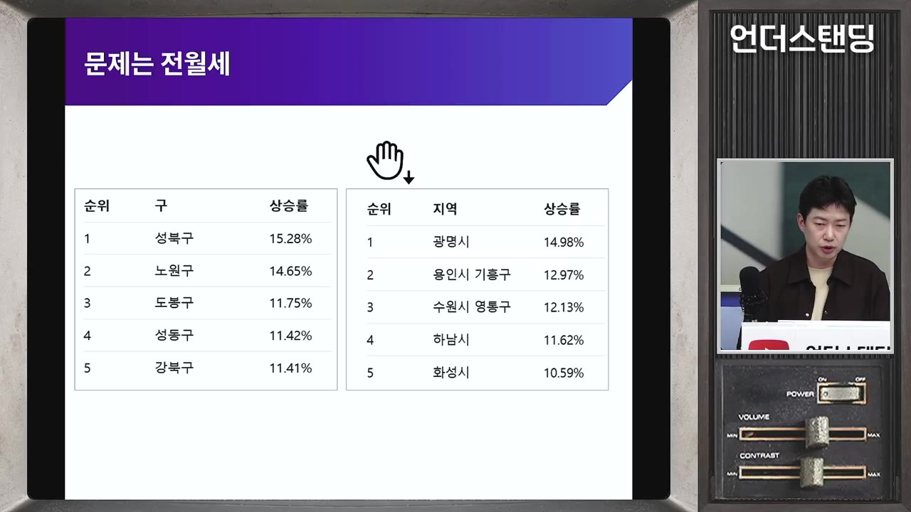
- 임대사업자·상생임대 매물은 임대를 주던 물량을 거주자에게 파는 것이다. 매매 시장에는 공급이지만 전월세 시장에서는 물량이 사라진다. 비서실장이 된 인사의 "68만 호 공급 효과" 발언은 매매만 본 것이라고 비판한다. (1:05:14)
- 2027년 하반기부터 은마·잠실주공5단지 등 약 1만 세대 재건축 이주가 시작되고 목동·압구정으로 이어진다. 이주비가 풀리고 멸실되니 전월세 압박이 커진다.
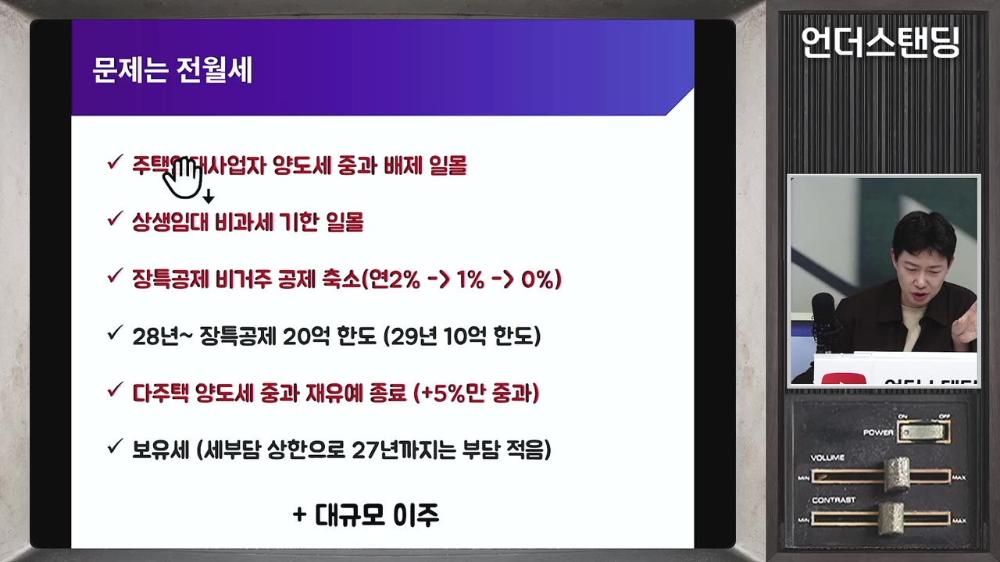
- 결과적으로 집값은 내리는데 주거비는 오르는 시장이 될 수 있다. 정부가 전세대출·보증까지 조이면 월세·반전세 부담이 커진다. 저출산에는 집값보다 임대료가 더 결정적이라는 점에서 주거 안정인지 의문이라고 했다.
- 이프로의 소견: 세입자는 전세가 인상에 가격 저항이 약해(3억→3억2천이면 그냥 대출 더 받음) 심리로 올라가는 면이 있다. 출연자는 2020년 8월 계약갱신청구권 도입 때 매물이 줄어 급등했다가 결국 폭락한 사례를 들어, 2027년 오른 전세가 2029년·2031년 사이클에 떨어질 수 있다고 봤다. 급락은 경매와 전세사기로 이어져 변동성 자체가 문제다.
- 다만 2031~32년까지 공급이 부족하고 1990년대생 30대 인구가 2029년까지 많아 결혼 수요가 커서 급락은 어렵다. 공급 부족의 근본 원인은 아파트 선호(빌라에서 아파트로만 이동)라고 했다.
2029년 시나리오와 상방 변수
- 2029년이 되면 다주택자, 보유세를 못 버티는 사람, 장기 보유 1주택자가 다 팔아 매물이 진짜 없는데 전세가는 올라와 있어 눌렸던 가격이 터질 수 있다고 본다. 역사적으로 집값이 눌리고 전세가 오른 뒤 매물 부담이 사라지면 매매 수요로 돌아가 다시 날아갔다. (1:08:40)
- 정부는 2030년부터 3기 신도시 공급이 쏟아지고 2년 누르면 상승 심리가 꺾길 것으로 기대하는 듯하지만, 2030년 공급은 불가능하고 심리 꺾기도 쉽지 않다고 본다.
🔁 출연자가 그리는 2026~2029년 시나리오
- 2026년 조정
- 상반기 일시 반등
- 2027년 매물 집중
- 2028년 잔여 매물
- 2029년 매물 고갈
- 12026년 조정
세금 데드라인 앞둔 매물 증가, 대출 규제로 소화 어려움. 보합이면 선방
- 2상반기 일시 반등
반포 탈락자 유입, 주가 반등(코스피 7천 수준이면 주식 이탈 자금 유입), 하이닉스 성과급 5억 등으로 반등 가능성
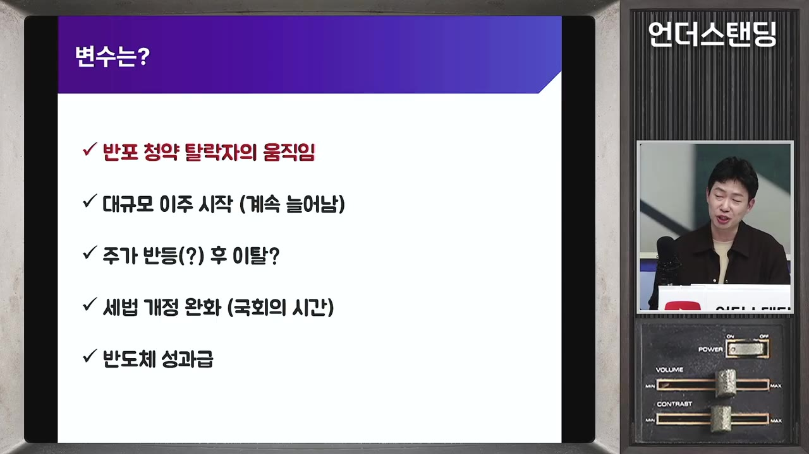
변수 5가지: 반포 청약 탈락자·대규모 이주·주가 반등·세법 완화·반도체 성과급 · ▶ 1:00:28 - 32027년 매물 집중
임대사업자·상생임대·토허제 유예 만기가 몰리고 전월세는 급등. 하반기 재건축 1만 세대 이주 시작
- 42028년 잔여 매물
장특공제 한도·보유세 상한 때문에 남은 매물 소진
- 52029년 매물 고갈
매물은 적고 전세가는 높아 눌린 가격이 터질 수 있음
- 결론적으로 조정될 때 집을 사야 하지만 떨어질 때는 더 떨어질 것 같아 못 산다. 용기를 낼 필요가 있다고 했다. (1:09:27)
- 이프로의 평: 세금으로 집값을 안 잡겠다고 공약한 최초의 정부가 세금으로 가장 잘 잡고 있다는 아이러니이며, 미래 매물을 임기 안에 쏟아내는 정책이라 그 이후는 다른 국면이 된다.
기억할 숫자·인용
- 대출 한도: 2025년 6월 6억 → 10월 15일 25억 이상 2억·15억 이상 4억·그 외 6억.
- 올해 상승률 상위 5구: 성북·서대문·강서·동대문·구로. 강남 마이너스, 용산·송파 4%.
- 30억 이상 주택 매입 자금 중 주식·채권 매각 대금 20% 전후, 15억~35억 10% 전후.
- 반디클: 분양가 30억~35억, 예상 가치 60억 이상, 일반 분양 약 1,800세대. 트리니원 청약 약 6만 명, 1만 명 진성 시 대기 자금 30조.
- 등록임대 추산: 서울 약 25,000세대, 경기 약 2만 세대. 등록 요건 공시가 6억 이하.
- 2022년 서울 월 거래 600~700건 vs 지금 강남 3구 주 150건(토허 신청 기준).
- 재건축 이주: 2027년 하반기 은마·잠실주공5단지 약 1만 세대.
- "위를 때렸더니 풍선 효과로 밑이 올라왔다."
- "내년 보합이면 굉장히 선방이다."
- "여기로 와 하고 모아놓고 막 때리는 정책."(이프로)
생각해볼 점
- 영상의 분석은 정부 세법안이 그대로 통과된다는 전제 위에 있다. 국회 심의에서 임대사업자·상생임대 조항이 조정되면 2027년 매물 규모와 비강남 영향은 달라진다.
- 비강남 중저가가 눌린다는 전망과 외곽 비규제 지역은 온기가 퍼진다는 전망이 함께 나온다. 경계선(규제 지역 여부, 12억 기준)이 어디인지 개별 단지 단위로 확인해야 한다. 진행자도 외곽 임대 매물이 더 필사적일 수 있다는 반론을 냈다.
- 2029년 재상승과 전세가 급락 사이클은 인구·공급·정권 변화에 크게 좌우되는 장기 시나리오다. 투자 판단의 근거라기보다 하나의 가설로 받아들이는 편이 안전하다. 이는 영상 속 출연자의 전망이며 투자 결과를 보장하지 않는다.
바로 해볼 일
- 관심 단지가 토허구역·규제 지역·12억 초과·공시가 6억 이하(2018년 전후) 중 어디에 해당하는지 확인해 영상의 어느 시나리오에 속하는지 분류해 본다.
- 다주택자·상생임대인·등록임대사업자라면 임대 기간 만료일과 2027년 말 데드라인을 달력에 적고 세무 상담을 예약한다.
- 아실 등에서 관심 지역 매물 수를 볼 때 숫자만 보지 말고 급매·세 낀 매물 비중이 얼마인지 함께 적어 둔다.